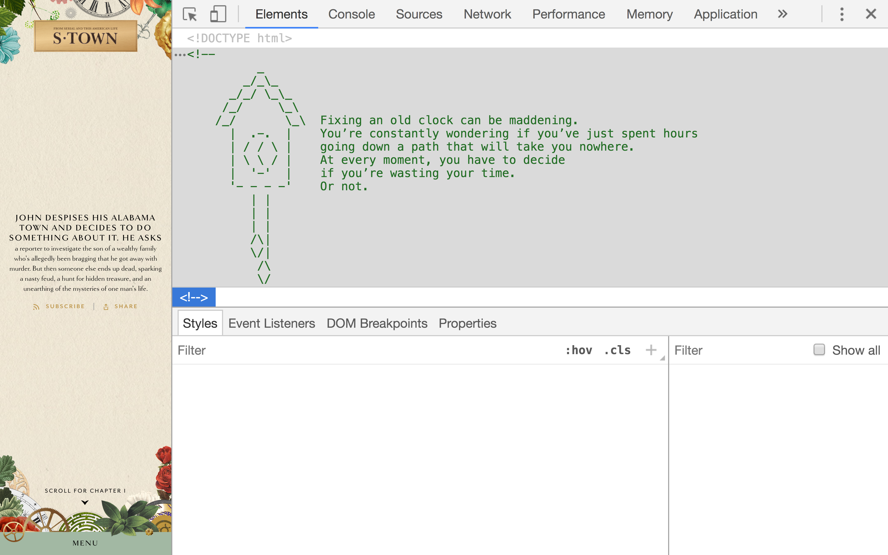

scroll for more.
Although an analogy between an antique clock restorer and a programmer is not a particularly obvious one, an Easter egg I found nested amongst the HTML for the * website, planted an idea in me that has stayed with me from the start of my code journey and into my current internship as a junior developer.
An antique clock, one that has been running for centuries, will require each pendulum, spring, pulley, bell and every other mechanism to interact with the upmost precision in order to display the correct time. A web application is composed of files containing instructions for displaying the pages. It can certainly be as simple as a few HTML and CSS files, but it is more common to see a codebase comprised of an intricate web of folders, written in countless languages, spread across dozens of different repositories.

For an antique clock restorer, one like S-Towns’s John B. McLemore, the path is to repairing an old clock is elusive. It is almost certain that the inner-working’s have been touched by many people over the years, each adding fixes to varying degrees of proficiency. Entire portions of the original clockwork may be gone and there are no diagrams or manuals to reference. A codebase, lovingly referred to as legacy code, is the modern day equivalent of an antique clock. The original programmers may have left the team or the organization and the documentation is most likely non-existent.
Ut ullamcorper arcu quis mauris semper venenatis. Fusce turpis sem, feugiat nec auctor nec, faucibus sit amet orci. Quisque a augue quis justo facilisis facilisis. Quisque eget suscipit metus, ut dignissim orci. Nullam in maximus lacus. Aenean vitae bibendum magna, ut aliquet dolor. Suspendisse felis sapien, pharetra et ipsum ut, hendrerit mattis mi. Curabitur sed volutpat neque. Nunc et velit eu metus scelerisque sollicitudin et nec lorem. Maecenas eget cursus nunc. Phasellus at nunc et erat condimentum interdum a fermentum nunc. Vestibulum justo ipsum, suscipit egestas orci vel, pharetra aliquam sem. Sed tristique leo eu magna pulvinar euismod. Duis et mi quis neque elementum pharetra porttitor vitae nisl. Ut tempor ultrices nisl.